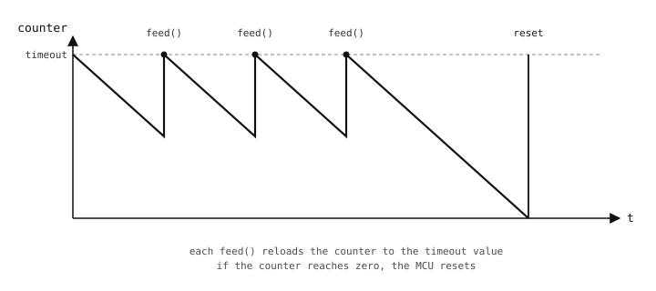

3.27. Watchdog timer¶
Um watchdog timer é um hardware que reinicia o microcontrolador se o script em execução algum dia deixar de cutucá-lo periodicamente. O script “alimenta” o watchdog a partir de algum ponto onde ele sabe que está rodando código saudável; se um bug, um travamento ou uma exceção inesperada algum dia impedir a câmera de alimentar o watchdog dentro de um timeout configurado, o chip reinicia a si mesmo e o script começa do zero.
Em um dispositivo implantado, sem ninguém por perto para reiniciá-lo, essa é a diferença entre um bug transitório que se recupera em segundos e um equipamento travado que exige uma visita técnica.

O contador do watchdog decresce a partir de seu timeout. Cada feed() o recarrega; se ele chegar a zero, o chip reinicia.¶
3.27.1. A classe machine.WDT¶
machine.WDT habilita o watchdog e expõe um único método, feed(). Uma vez iniciado, o watchdog não pode ser parado – as únicas saídas são alimentá-lo no prazo ou deixá-lo reiniciar o chip:
from machine import WDT
wdt = WDT(timeout=2000) # reset if not fed within 2 seconds
while True:
do_work()
wdt.feed()
O timeout é em milissegundos. O valor certo depende de quanto tempo leva a iteração legítima mais longa do laço principal, com uma folga confortável – um laço de 100 ms com um timeout de 2 s tem ampla margem para uma iteração lenta sem resets indevidos.
3.27.2. Onde chamar feed()¶
Onde o feed() reside é a decisão de projeto crítica; o watchdog só captura bugs nas partes do código que não rodam entre as alimentações.
Chame a partir do laço principal, no topo ou no fim. O padrão mais comum. O watchdog captura qualquer coisa que trave o laço principal – um deadlock, um
whileinfinito, um periférico que nunca retorna – e reinicia o chip de volta para dentro do laço.Não chame a partir de um tratador de interrupção. O propósito do watchdog é capturar travamentos no caminho de código normal. Uma ISR que dispara independentemente de o laço principal estar travado continuaria alimentando um watchdog que deveria estar disparando.
Não chame de dentro de uma operação bloqueante longa. Uma requisição de rede ou uma leitura de sensor que leva dez segundos é exatamente o tipo de travamento que o watchdog deve capturar. Colocar o
feed()dentro dela anula a proteção.
Uma diretriz que funciona para a maioria dos programas: alimente uma vez por iteração do laço principal, com o timeout ajustado para várias vezes a duração esperada do laço. Se uma única iteração legitimamente precisar de mais tempo que o timeout – uma fase de calibração deliberada, digamos – estruture essa fase como uma série de pedaços menores com feed() entre eles, ou altere o timeout com timeout_ms() (onde houver suporte) antes de entrar nela.
3.27.3. Disponibilidade¶
O watchdog é exposto na maioria das câmeras OpenMV, mas não em todas – o hardware está presente em todas as peças, mas a API Python ainda não está conectada em todos os lugares. Consulte a Placas OpenMV ou tente construir um WDT e capture o AttributeError caso não haja suporte.
Mesmo em câmeras onde WDT não é exposto, um dispositivo implantado em campo pode usar um equivalente por software – uma tarefa separada ou um passo do laço principal que monitora o progresso e dispara machine.reset() se algo parecer travado. É menos robusto que um watchdog de hardware (um tratador de interrupção travado pode derrubar também o monitor por software), mas cobre os mesmos casos no nível da aplicação.